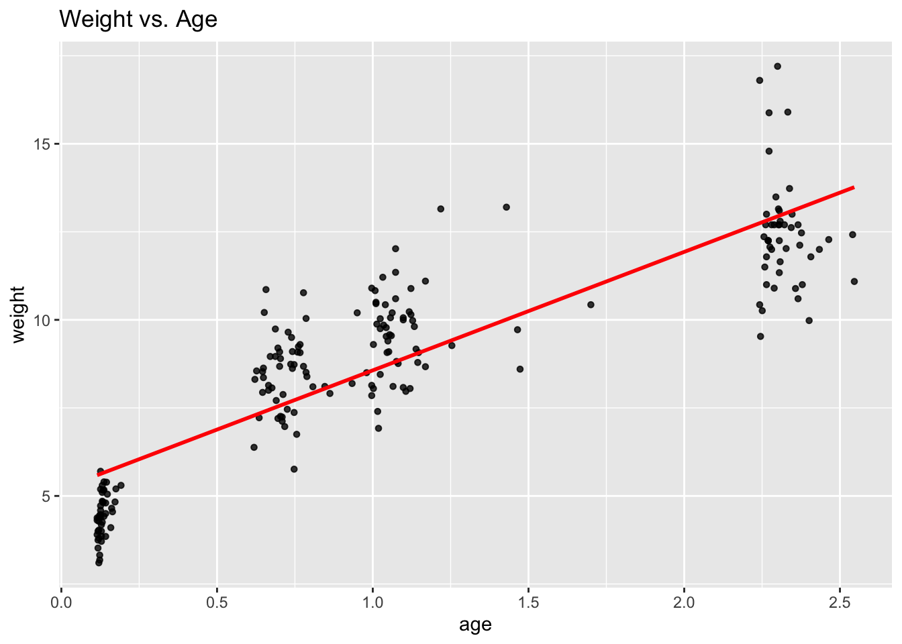
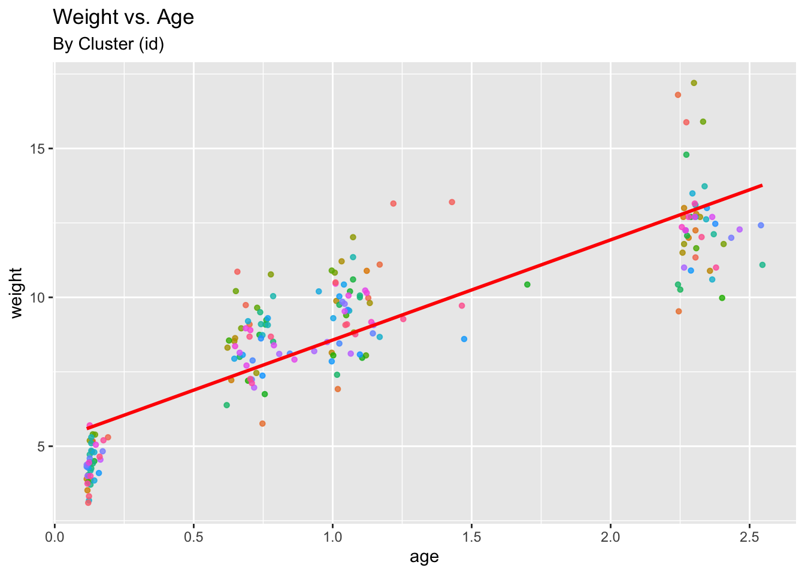
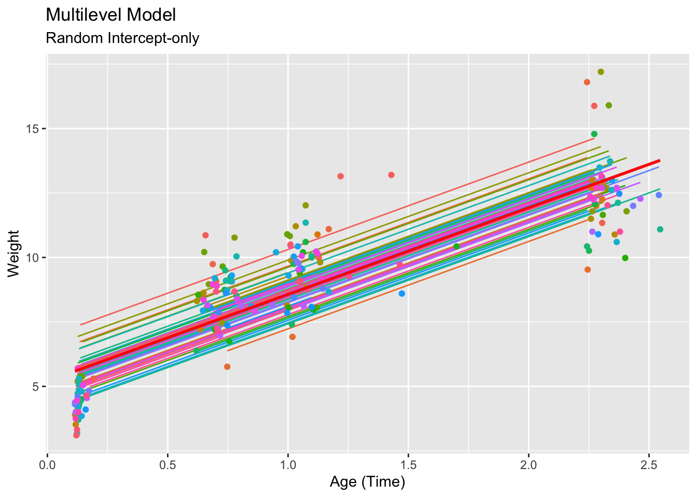
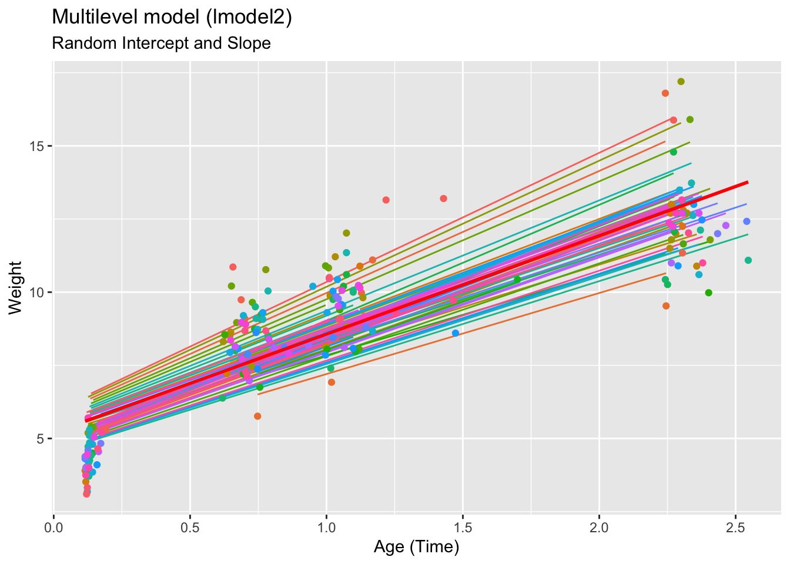
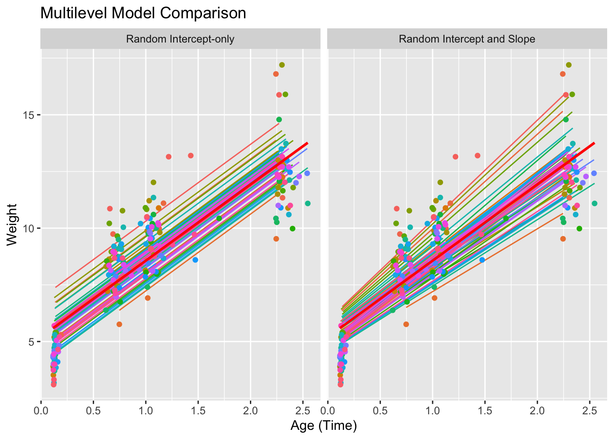
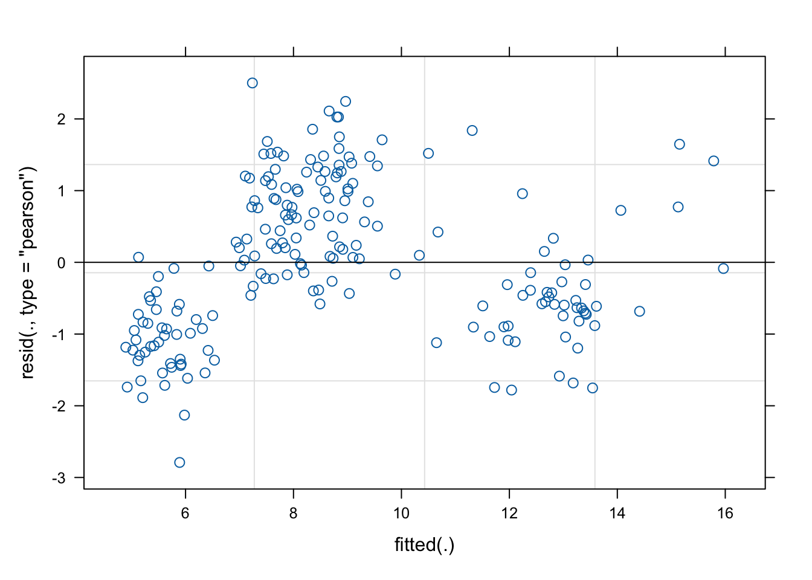
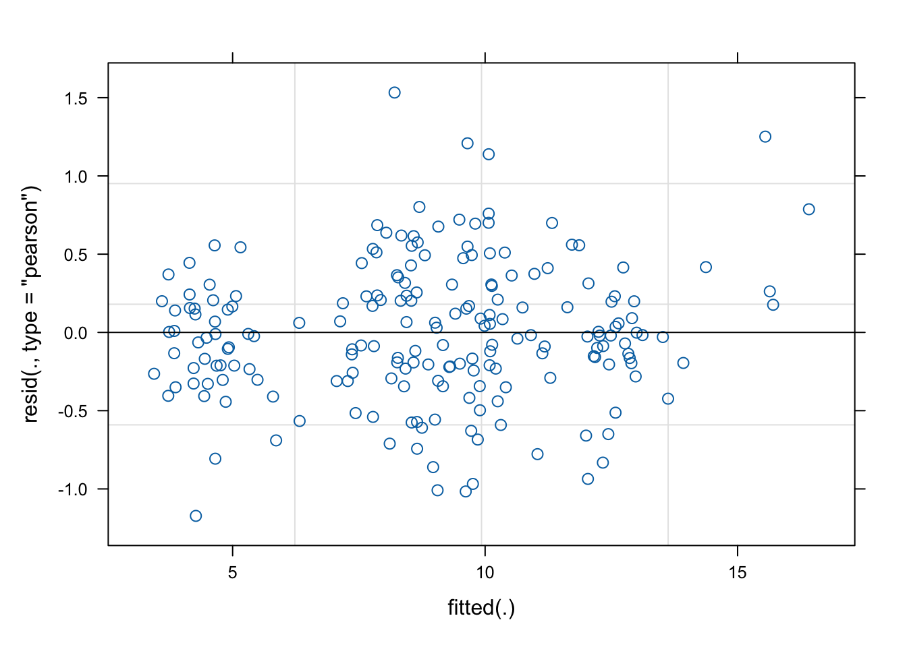
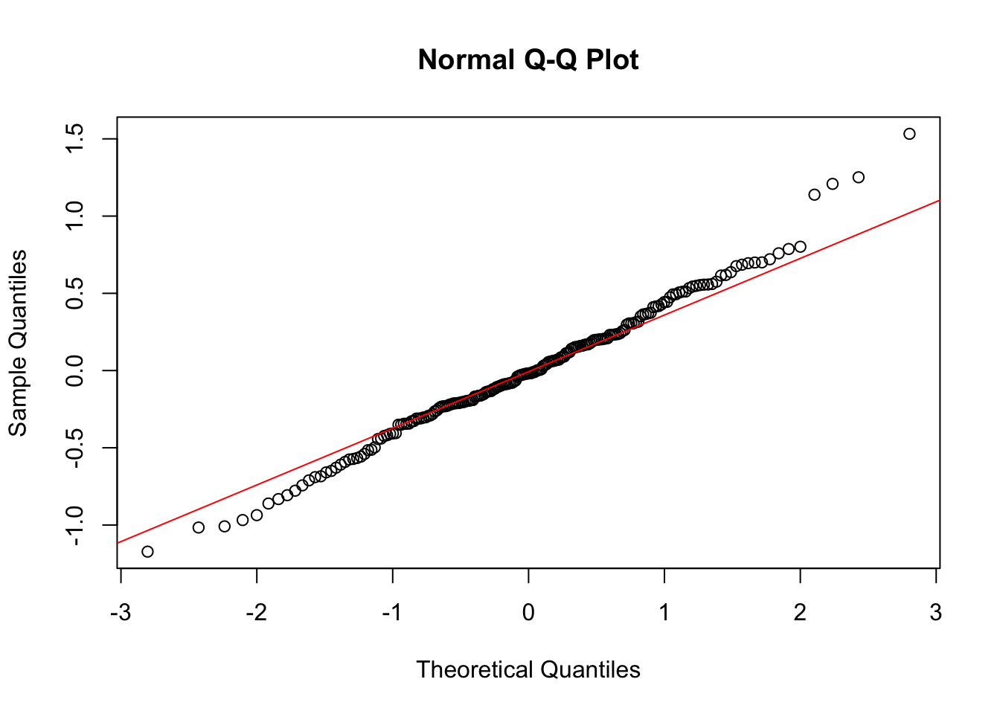
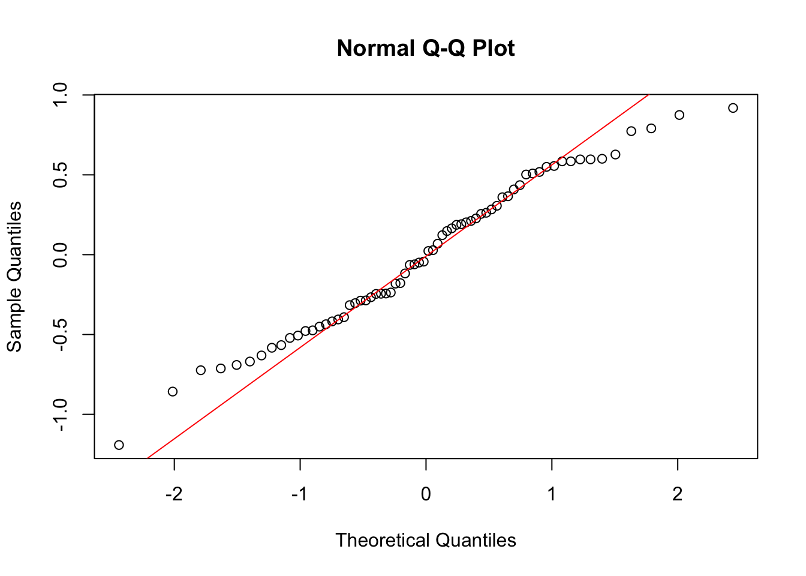

5 Multilevel Modelling Practical 5 (Week 6)
5.1 Instructions - start here!
This lab involves the analysis of a longitudinal data set (full details below).
Let’s begin by loading the necessary packages and data:
5.1.1 Overview
The analysis starts by introducing the longitudinal data and some visual representations. This particular dataset was chosen for three primary reasons:
It illustrates the basic notion of “time” in a slightly different context with the hope of a more intuitive understanding. The time variable is age and is continuous (contrary to most cases where it is presented as discrete) to showcase that what defines time is the repeated values within children, rather than a discrete definition and format.
It binds well to the notion of covariance. When defined as a random intercept and random slope model, it has a fanning-out form that is distinct enough to produce a positive covariance, allowing for an intuitive explanation both illustratively and quantitatively of what the sign on a covariance implies.
There is a non-linear relationship between the response and time, which presents us with an opportunity to showcase how to deal with it.
The practical continues by comparing the random intercept and full random effects models, again using ggplot2.
It then uses the full random effects model as the primary model to conduct diagnostic checks where non-linearity is discovered in the residuals plot and then countered using a squared age variable.
It is also shown how one can extract the variance-covariance matrix for inspection and how to use it to build the Intraclass Correlation Coefficient.
Some basic model assumptions are also tested using visual representations.
5.1.2 Multilevel modelling with longitudinal data
The data set is comprised of child weight for children in a British community who were weighed up to four times, roughly between the ages of 6 weeks and 27 months. (It represents a random sample of data previously analyzed by Goldstein (1986) and Prosser, Rasbash, and Goldstein (1991).)
Download the file childweight.RData from Ultra and place it into your working directory. (Consult Practical 3 if you need further instructions on how to do this.) Then load it into your workspace via ` \(~\)
load("childweight.RData") # Insert directory as needed
data <- childweight
#Or uncomment the following if there are issues loading the workspace
#data <- read.csv("https://andygolightly.github.io/teaching/MATH43515/childweight.csv")[,-1]
weight <- data$weight
age <- data$age
birthw <- data$brthwt
girl <- data$girl
id.f <- as.factor(data$id)5.1.2.1 Brief exploratory analysis
Data summary and inspection:
## # A tibble: 6 × 5
## id age weight brthwt girl
## <dbl> <dbl> <dbl> <dbl> <dbl+lbl>
## 1 45 0.137 5.17 4140 0 [boy]
## 2 45 0.657 10.9 4140 0 [boy]
## 3 45 1.22 13.1 4140 0 [boy]
## 4 45 1.43 13.2 4140 0 [boy]
## 5 45 2.27 15.9 4140 0 [boy]
## 6 258 0.192 5.30 3155 1 [girl]## id age weight brthwt girl
## Min. : 45 Min. :0.1150 Min. : 3.100 Min. :1575 Min. :0.0000
## 1st Qu.:1271 1st Qu.:0.6461 1st Qu.: 7.008 1st Qu.:2807 1st Qu.:0.0000
## Median :2351 Median :0.9966 Median : 9.071 Median :3120 Median :0.0000
## Mean :2491 Mean :1.0806 Mean : 8.837 Mean :3106 Mean :0.4949
## 3rd Qu.:3704 3rd Qu.:1.4709 3rd Qu.:10.890 3rd Qu.:3390 3rd Qu.:1.0000
## Max. :4975 Max. :2.5462 Max. :17.200 Max. :4270 Max. :1.0000Although in most cases of longitudinal analysis you will encounter discrete categorical time values (i.e. 1, 2, 3,…) in this setting, time is not discrete but continuous with differing values between children. This feature however, does not necessarily imply that any additional methodology is needed to handle this.
\(~\)
Let’s plot the data by visualising the linear relationship.
ggplot(data = data,
aes(x = age,
y = weight))+
geom_point(size = 1.2,
alpha = .8)+
geom_smooth(method="lm",
se=FALSE,
col="Red")+
labs(title = "Weight vs. Age")
\(~\)
We can also re-plot the relationship, this time inspecting group effects and the potential need for a multilevel model. 
TASK: Identify the number of levels in this data set, and the covariate(s) at each level.
Click for solution
We have two levels (time nested inside individuals). Theage variable is playing the role of time here. Hence, weight, birthw and girl are all at the individual level (top level of the hierarchy).
5.1.2.2 Random intercept model
Let’s fit a multilevel model with random intercepts and a binary coavriate girl. The model takes the form
\[y_{ti} = a+u_i+ b_1 T_{ti}+b_2\text{girl}_{i} +\epsilon_{ti}\]
We fit the model via:
## Linear mixed model fit by REML. t-tests use Satterthwaite's method ['lmerModLmerTest']
## Formula: weight ~ age + girl + (1 | id)
## Data: data
##
## REML criterion at convergence: 694.5
##
## Scaled residuals:
## Min 1Q Median 3Q Max
## -2.26782 -0.64129 -0.02437 0.72794 2.35999
##
## Random effects:
## Groups Name Variance Std.Dev.
## id (Intercept) 0.5035 0.7095
## Residual 1.5378 1.2401
## Number of obs: 198, groups: id, 68
##
## Fixed effects:
## Estimate Std. Error df t value Pr(>|t|)
## (Intercept) 5.5149 0.2152 123.2548 25.630 < 2e-16 ***
## age 3.3888 0.1153 148.5110 29.389 < 2e-16 ***
## girl -0.7159 0.2499 64.9110 -2.865 0.00562 **
## ---
## Signif. codes: 0 '***' 0.001 '**' 0.01 '*' 0.05 '.' 0.1 ' ' 1
##
## Correlation of Fixed Effects:
## (Intr) age
## age -0.573
## girl -0.575 -0.006\(~\)
Now extract and visualize the fitted values vs. the linear model:
data$pred1 <- predict(lmodel)
lmodel_int <- ggplot(data, aes(age,weight)) +
geom_line(aes(y=pred1,group=id.f, col=id.f)) +
geom_point(aes(age,weight,col=id.f)) +
geom_smooth(method="lm",
se=FALSE,
col="Red") +
ggtitle("Multilevel Model",
subtitle="Random Intercept-only") +
xlab("Age (Time)") +
ylab("Weight") +
theme(legend.position = "none")
lmodel_int
5.1.2.3 Adding a random slope for time
A multilevel model with both random intercepts and a random slope for time can be fitted thus:
## Linear mixed model fit by REML. t-tests use Satterthwaite's method ['lmerModLmerTest']
## Formula: weight ~ age + girl + (1 + age | id)
## Data: data
##
## REML criterion at convergence: 684.1
##
## Scaled residuals:
## Min 1Q Median 3Q Max
## -2.38416 -0.69583 -0.04232 0.73479 2.13691
##
## Random effects:
## Groups Name Variance Std.Dev. Corr
## id (Intercept) 0.05702 0.2388
## age 0.20709 0.4551 1.00
## Residual 1.36994 1.1704
## Number of obs: 198, groups: id, 68
##
## Fixed effects:
## Estimate Std. Error df t value Pr(>|t|)
## (Intercept) 5.4293 0.1869 121.3239 29.051 < 2e-16 ***
## age 3.4593 0.1264 70.9320 27.362 < 2e-16 ***
## girl -0.6354 0.2316 71.3148 -2.744 0.00767 **
## ---
## Signif. codes: 0 '***' 0.001 '**' 0.01 '*' 0.05 '.' 0.1 ' ' 1
##
## Correlation of Fixed Effects:
## (Intr) age
## age -0.488
## girl -0.612 -0.006\(~\)
We visualize the fitted values:
data$pred2 <- predict(lmodel2)
lmodel_int_sl <- ggplot(data,aes(age,weight)) +
geom_line(aes(y=pred2,group=id.f, col=id.f)) +
geom_point(aes(age,weight, col=id.f)) +
geom_smooth(method="lm",
se=FALSE,
col="Red")+
ggtitle("Multilevel model (lmodel2)",
subtitle="Random Intercept and Slope") +
xlab("Age (Time)") +
ylab("Weight")+
theme(legend.position = "none")
lmodel_int_sl
\(~\)
Let’s extract and inspect the variance-covariance matrix.
## grp var1 var2 vcov sdcor
## 1 id (Intercept) <NA> 0.05701865 0.2387858
## 2 id age <NA> 0.20708864 0.4550699
## 3 id (Intercept) age 0.10866423 0.9999999
## 4 Residual <NA> <NA> 1.36994491 1.1704465The positive covariance re-affirms the fanning out pattern observed. The higher the predicted weight at baseline time (that is, higher child intercept), the higher the weight will be as time passes (i.e. a steeper child time slope).
\(~\)
Let’s look at a visual comparison between the random intercept vs random intercept and slope model. Make sure you understand the following code:
vars <- c("id","age","weight")
data_pred1 <- cbind(data[,vars],data[,"pred1"],group=1)
names(data_pred1)[4] <- "pred"
data_pred2 <- cbind(data[,vars],data[,"pred2"],group=2)
names(data_pred2)[4] <- "pred"
data_comp <- rbind(data_pred1,data_pred2)
model_names <- c("1"="Random Intercept-only","2"="Random Intercept and Slope")
ggplot(data_comp, aes(age,weight)) +
geom_line(aes(y=pred,group=as.factor(id),
col=as.factor(id))) +
geom_point(aes(age,weight,
col=as.factor(id))) +
geom_smooth(method="lm",
se=FALSE,
col="Red")+
facet_wrap(~group,
labeller = as_labeller(model_names)) +
ggtitle("Multilevel Model Comparison") +
xlab("Age (Time)") +
ylab("Weight") +
theme(legend.position = "none")
TASK: Is the random slope on time needed? Perform an appropriate test.
Click for solution
## ANOVA-like table for random-effects: Single term deletions
##
## Model:
## weight ~ age + girl + (1 + age | id)
## npar logLik AIC LRT Df Pr(>Chisq)
## <none> 7 -342.05 698.10
## age in (1 + age | id) 5 -347.24 704.48 10.389 2 0.005547 **
## ---
## Signif. codes: 0 '***' 0.001 '**' 0.01 '*' 0.05 '.' 0.1 ' ' 1\(~\)
5.1.2.4 Dealing with the nonlinear relationship
Given that the more complex model lmodel2 captures non-zero variance in random intercept and slope parameters, we will continue with it as our main model.
Are the model assumptions valid? We will begin by inspecting the residuals.

It is evident that the plot suggests an underlying non-linear structure.
\(~\)
In order to correct the non-linearity observed, we perform multilevel modelling again, this time including a non-linear term for age.
## Linear mixed model fit by REML. t-tests use Satterthwaite's method ['lmerModLmerTest']
## Formula: weight ~ age + c(age * age) + girl + (1 + age | id)
## Data: data
##
## REML criterion at convergence: 518
##
## Scaled residuals:
## Min 1Q Median 3Q Max
## -2.04189 -0.44260 -0.03241 0.41940 2.66968
##
## Random effects:
## Groups Name Variance Std.Dev. Corr
## id (Intercept) 0.3781 0.6149
## age 0.2681 0.5178 0.14
## Residual 0.3296 0.5741
## Number of obs: 198, groups: id, 68
##
## Fixed effects:
## Estimate Std. Error df t value Pr(>|t|)
## (Intercept) 3.79550 0.16815 85.13224 22.573 < 2e-16 ***
## age 7.69844 0.23985 130.74444 32.096 < 2e-16 ***
## c(age * age) -1.65773 0.08859 111.71023 -18.711 < 2e-16 ***
## girl -0.59838 0.19997 57.23067 -2.992 0.00408 **
## ---
## Signif. codes: 0 '***' 0.001 '**' 0.01 '*' 0.05 '.' 0.1 ' ' 1
##
## Correlation of Fixed Effects:
## (Intr) age c(*ag)
## age -0.543
## c(age*age) 0.502 -0.929
## girl -0.588 -0.008 0.007\(~\)
We again inspect the residuals vs fitted values.

It is evident that the non-linearity has been controlled for and residuals look much more acceptable.
\(~\)
We continue with inspection of model assumptions. i.e. normally distributed residuals and random effects.


The QQ Plots also look fairly acceptable (close to y=x line).
TASK: Visualise the fit of lmodel3, with separate plots for girls vs boys. Hint: first use predict(lmodel3) to create a new column in data.
Click for solution
data$pred3 <- predict(lmodel3)
lmodel_int_s2 <- ggplot(data,aes(age,weight)) +
geom_line(aes(y=pred3,group=id.f, col=id.f)) +
geom_point(aes(age,weight,col=id.f)) +
geom_smooth(method="lm",
se=FALSE,
col="Red")+
facet_wrap(~girl,
labeller = as_labeller(c("0"="Boy","1"="Girl")))+
ggtitle("Multilevel model (lmodel3)",
subtitle="Random Intercept and Slope, nonlinear age") +
xlab("Age (Time)") +
ylab("Weight")+
theme(legend.position = "none")
lmodel_int_s2## `geom_smooth()` using formula = 'y ~ x'\(~\)
Harder: We have not yet included the birth weight birthw variable in the model. How should we interpret the inclusion of birthw as a fixed effect? What would you expect to happen when you include it? Confirm (or deny) your intuition!
Click for solution
birthw is an individual level covariate. Hence, it’s inclusion as a fixed effect may help to explain some of the variability in the random intercept terms. I’d expect that adding it in will result in a reduction in the random intercept variance and (probably) an insignificant overall intercept term (since for each individiual, birthw and the random intercept will effectively capture most of the baseline variation.)
\(~\)
End of lab!